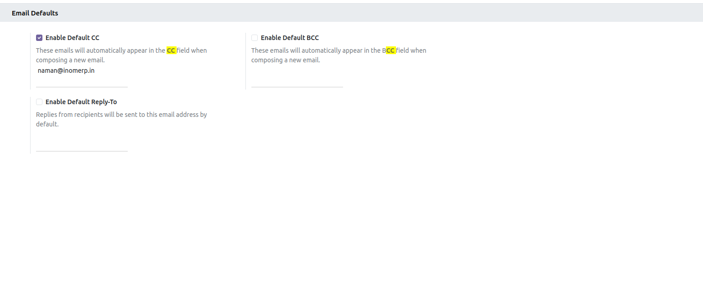
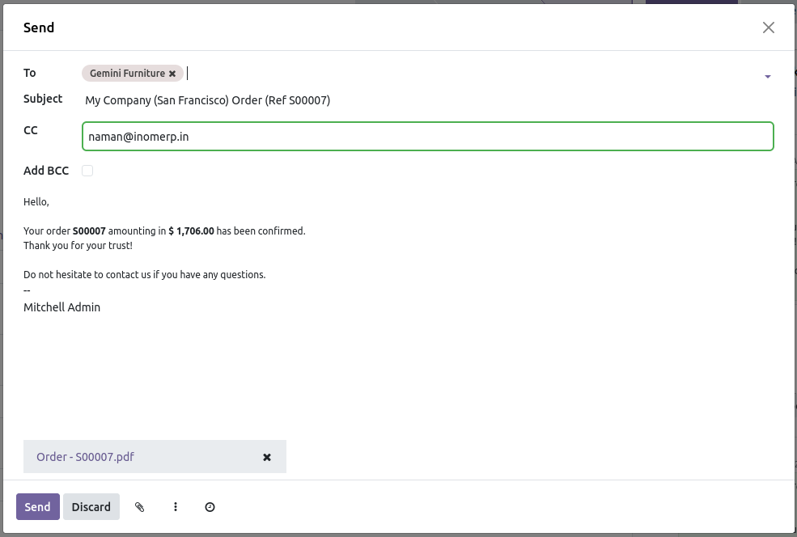

Take Full Control of Your Emails
Manage CC, BCC, and Reply-To fields with default settings and track every email efficiently in Odoo.
Enhance your email workflow and reduce mistakes.
Get the Module
Key Features
-
Default CC / BCC: Set default CC and BCC emails for every outgoing email, saving time and avoiding mistakes.
-
Reply-To Control: Customize Reply-To addresses easily, ensuring responses go to the correct inbox.
-
Email Tracking: Track sent emails with automatic logging, giving better insights on communication.
How It Works
- Install the module in your Odoo environment.
- Configure default CC, BCC, and Reply-To addresses in the settings.
- Send emails from any Odoo model, and the defaults will automatically apply.
- Track all sent emails in the chatter or log for full transparency.
- This feature works globally across all Odoo applications, automatically
integrating with any module where the "Send Email" button is available,
ensuring consistent email management throughout your system.
Module Screenshots
Preview of Advanced Email Control module in action:

you can add email as default email by enable in the settings

Or you can send directly by add email on the quatation sending time
Download & Install
Get the module and enhance your Odoo email management today.
Improve workflow efficiency and reduce errors in email communication.
Download Module